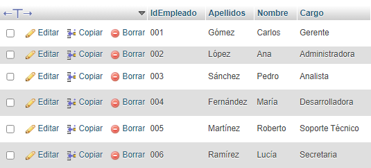

LABORATORIO NUMERO DOS
En la base de datos de servicios, se maneja una gran cantidad de información relacionada con los empleados, sus salarios, cargos, departamentos, entre otros aspectos. Las consultas de acción permiten realizar modificaciones o inserciones en las tablas de la base de datos de manera dinámica y eficiente. A continuación, se explican las consultas más comunes utilizadas para gestionar los datos de la base de datos de recursos humanos.
Realización de las Consultas de Acción
Las consultas de acción utilizadas en la base de datos, con ejemplos de las consultas DELETE, INSERT INTO, SELECT INTO, INSERT INTO SELECT y UPDATE.
- La consulta DELETE se utiliza para eliminar registros de una tabla. Es importante tener cuidado con esta consulta, ya que elimina de manera permanente los datos que no se desean. En el contexto de recursos humanos, se usar para eliminar a un empleado que ya no trabaja en la empresa.
- La consulta INSERT INTO se utiliza para agregar nuevos registros en una tabla. En una base de datos de recursos humanos, se utiliza para insertar nuevos empleados, departamentos, o cargos.
- La consulta SELECT INTO se utiliza para seleccionar datos de una o más tablas y copiarlos a una nueva tabla.
- La consulta INSERT INTO SELECT permite insertar datos seleccionados desde una tabla en otra tabla.
- La consulta UPDATE se utiliza para modificar registros existentes en una tabla. Es útil para actualizar la información de los empleados, como cambios en salario, cargo, o departamento.
Las consultas de acción (DELETE, INSERT INTO, SELECT INTO, INSERT INTO SELECT, UPDATE) son herramientas poderosas para administrar la base de datos de recursos humanos. Estas consultas no solo permiten mantener la base de datos actualizada, sino también organizar y realizar análisis de manera eficiente. Un buen manejo de estas consultas es clave para asegurar la integridad de los datos y la eficiencia operativa del sistema.